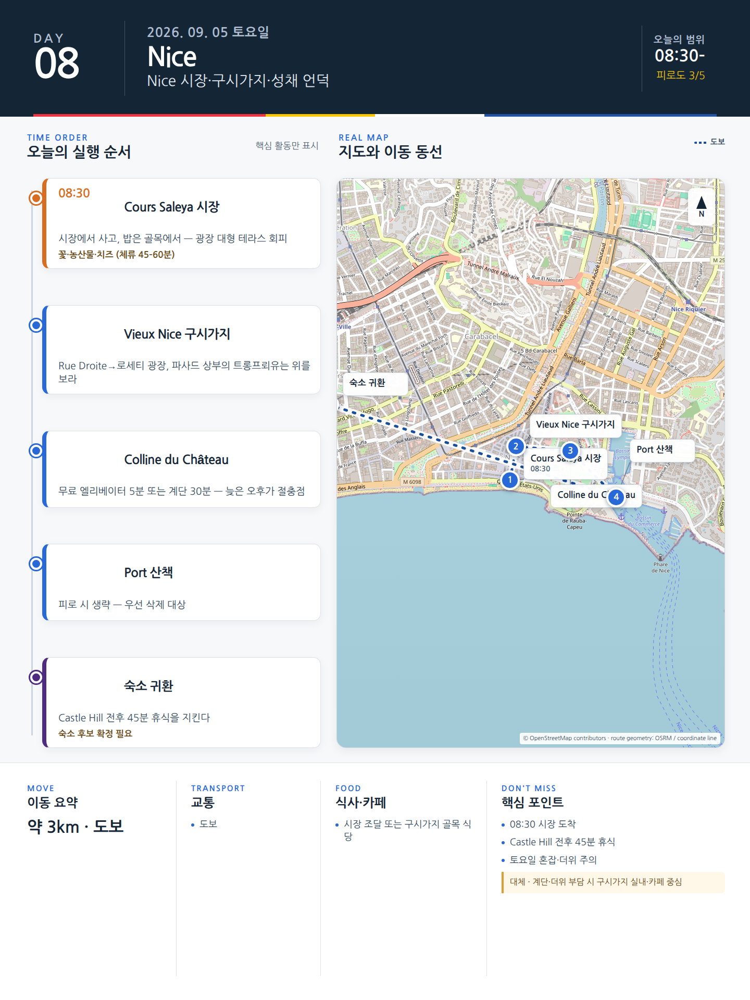

Day 8 · 9/5 토 · Nice

카드의 지도영역은 일정 순서를 보여주는 개요이며 내비게이션이 아닙니다. 실제 도보·운전 경로는 Google Maps에서 다시 계산하세요.
시간표
| 시간 | 일정 | 실행 포인트 |
|---|---|---|
| 07:20–08:05 | Jason 선택 러닝 | Promenade 5km 내외 |
| 09:20–10:20 | Cours Saleya | 과일·올리브·치즈·꽃시장 |
| 10:20–11:30 | Vieux Nice | Sainte-Réparate, 골목, 작은 광장 |
| 11:35–12:35 | Colline du Château | 해변·구시가지·항구 조망 |
| 12:45–13:30 | 가벼운 점심 | socca·salade niçoise·pan bagnat 중 1개 |
| 13:30–16:00 | Promenade 또는 Port·카페 | 폭염이면 숙소휴식 |
| 16:30–18:00 | 선택 | Port 또는 Garibaldi 중 1개 |
| 19:30–21:00 | 전통 Nice 저녁 | Acchiardo 또는 La Table Alziari |
피로도
3/5
이 날의 메모
Nice 핵심: 시장, 구시가지, 성채언덕, 해변
필수는 Cours Saleya·Vieux Nice·Castle Hill이다.
오늘 확인할 것
- 핵심 실행
- Cours Saleya·Vieux Nice·Castle Hill
- 권장 출발
- 08:30 시장 도착
- 완충
- Castle Hill 전후 45분 휴식
- 최고 리스크
- 계단·더위·토요일 혼잡
- 우선 삭제
- Port·해변
- 대체안
- 구시가지 실내·카페
- 식사·휴식
- 시장 또는 구시가지
- 잠금 필요
- 시장·숙소
이 날의 장소
일자별 시간표와 본문 표기에서 찾은 것이다. 하루의 전부가 아니라 장소 카드가 있는 것만 담는다.